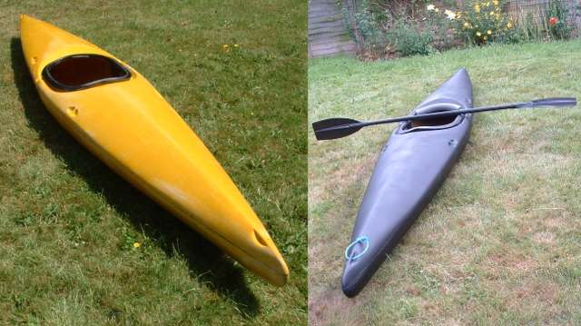
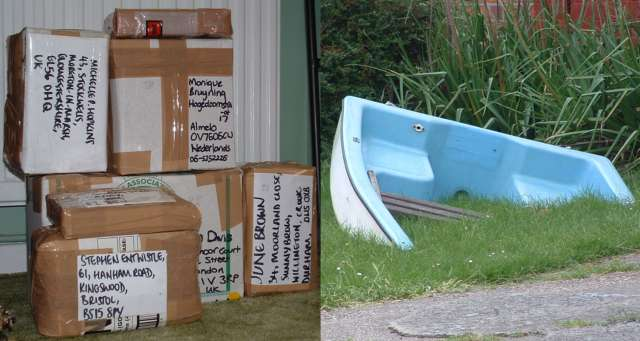
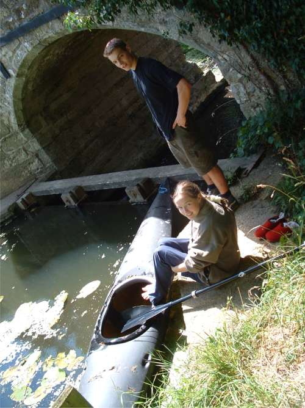
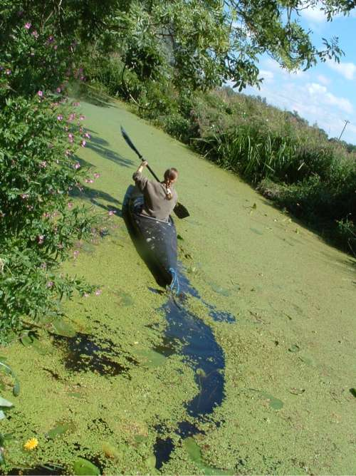
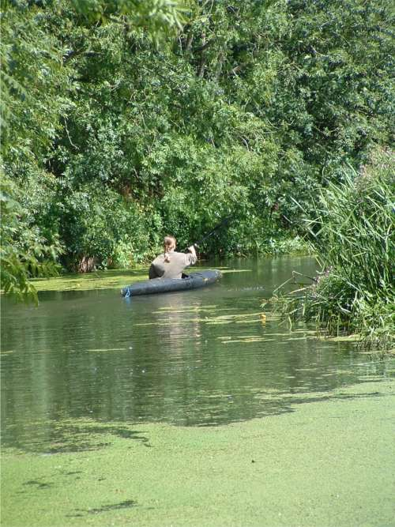
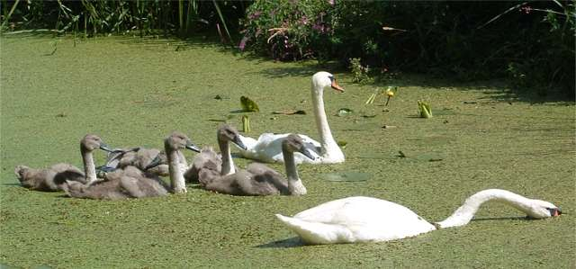

boats are not the new bikes. we bought a canoe. scroll down for words and captions.


   |
our friend simon (bleachy) used to ride trails but he
stopped and now he goes to the pub and is scared of falling off like
everyone else. he had this old canoe he never used and he let us buy if
off him. it was yellow, but we painted it matt black so it would be more
camouflaged at the trails (where it is hidden).
we i made some money by selling a load of old buffy videos i was given on ebay (that's what the parcels above are.) then we fixed the holes and sprayed it black and got a paddle. that other picture on the right is of someone's front garden in reading. for some reason they have an old rowing boat sunk into their garden the rest of the pictures are of when becky went in the kayak. i thought she would be too scared of falling in, but she wasn't. i think she enjoyed it. the river is covered with weeds at this time of year - that's what all the green stuff is. that makes it hard to paddle. when becky came back from her canoeing adventure she found that she had trapped some swans between her and the wier. the closer she got to them the more mad they got and it looked like they were going to attack her. so we had to get her out of the river at a different place. she had to hang on a branch and then climb across it to the river bank. i took this picture on the left. i like it, but i really should have got the horizon level, but i quite like it like this too. |
